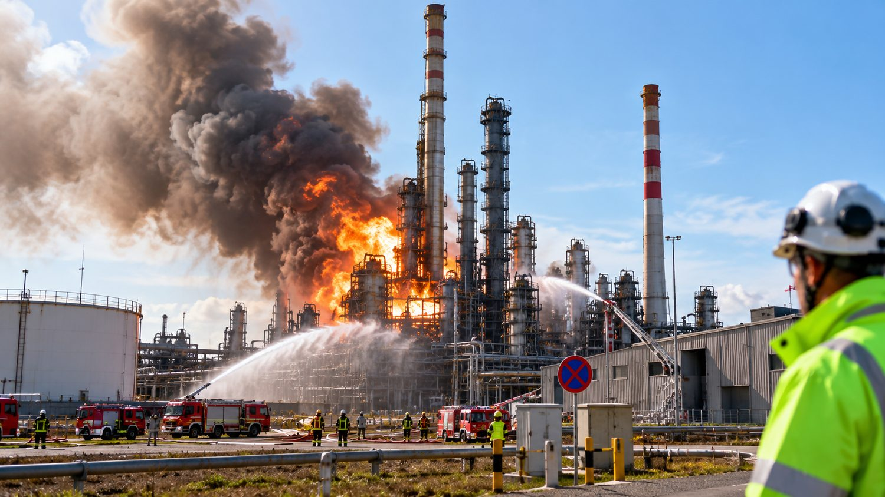
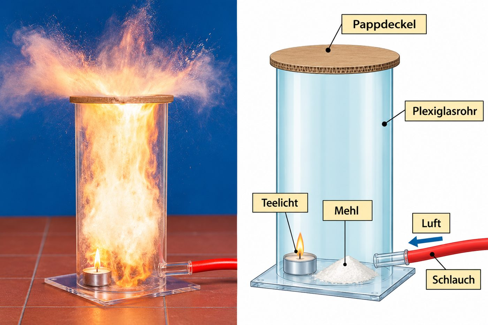
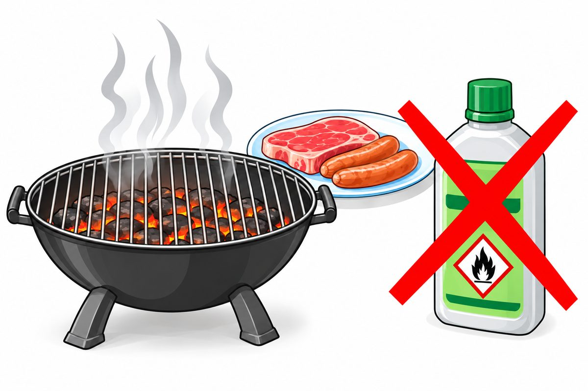

Explosion in der Raffinerie
Heftige Explosion in Raffinerie
Großbrand und 15 Verletzte
Früh am Morgen erschütterte ein gewaltiger Knall das Gelände einer bei Ingolstadt. Man hörte ihn über viele Kilometer. Fensterscheiben zerbrachen, Dachziegel flogen von den Dächern, mehr als 100 Gebäude wurden beschädigt.
Vermutlich war in einer Anlage ein Leck entstanden. Aus ihm entwichen brennbare Gase. Zusammen mit Luft ist das Gemisch explodiert und hat einen Großbrand ausgelöst.
Hunderte Einsatzkräfte löschten und verhinderten, dass das Feuer auf das große Tanklager übergriff.
Nach der Meldung im Schulbuch (S. 29). Tippe im Foto auf die Punkte.

Tippe auf einen Punkt im Foto.
0 von 5 entdeckt
Achte auf die Warnzeichen
Auf Flaschen und Dosen warnen vor gefährlichen Stoffen. Zwei davon passen zu diesem Modul:
kann explodieren
z. B. Benzin, Spiritus
Brennt Mehl?
Versuche, auf einem Spatel eine kleine Menge Mehl in einer Kerzenflamme zu verbrennen. Verwende eine feuerfeste Unterlage. Schreibe deine Beobachtung auf.
Was glaubst du: Brennt das Mehl?
Durchführung: Etwa 1 Spatel Mehl kommt in die Schale. Die Kerze wird angezündet und der Deckel auf das Rohr gelegt. Der Schlauch zeigt auf das Mehl. Mit einem kräftigen Stoß wird Luft durch den Schlauch geblasen, sodass das Mehl aufgewirbelt wird.
Das Mehl liegt als Häufchen in der Schale – das Teelicht brennt ganz ruhig daneben.

MERKE
- Als Häufchen brennt Mehl kaum. Fein in der Luft verteilt, explodiert Mehlstaub, sobald er an eine Flamme oder einen Funken kommt.
- Wenn in der Luft brennbare Stoffe fein verteilt sind, besteht Explosionsgefahr.
Warum? Die große Oberfläche
Ein Stoff kann nur dort brennen, wo der der Luft an ihn herankommt – an seiner .
Ein kompakter Körper (Holzklotz, Mehlhäufchen) hat nur außen Kontakt mit Luft. Er brennt von außen nach innen, Schicht für Schicht – langsam.
Ist der Stoff fein verteilt (Staub, Gas), hat er eine riesige Oberfläche. Dann können viele Teilchen fast gleichzeitig mit Sauerstoff reagieren. Die Verbrennung läuft schlagartig ab, als . Dabei wird in sehr kurzer Zeit sehr viel Energie frei.
Wähle, wie fein der Stoff zerteilt ist, und zünde ihn. Vergleiche „Klumpen“ und „Staub“. Die Balken zeigen, wie viel Energie in jedem Zeitschritt frei wird.
🟠 Brennstoff-Teilchen · 🔴 Sauerstoff-Teilchen der Luft
MERKE
- Wenn in der Luft brennbare Stoffe fein verteilt sind, besteht Explosionsgefahr.
- Durch die große Oberfläche können viele Teilchen fast zeitgleich mit Sauerstoff reagieren; dann kommt es zur Explosion.
- Bei einer Explosion wird schlagartig sehr viel Energie freigesetzt.
Explosive Gasgemische und die Druckwelle
Explosive Gasgemische. oder können sehr gefährlich sein.
Vermischen sich solche brennbaren Gase mit dem Sauerstoff der Luft, genügt ein einziger Funke, um das hochexplosive Gemisch zu zünden. Gase sind in der Luft nämlich sehr fein verteilt und haben eine große Oberfläche. Sie reagieren sehr rasch mit dem Sauerstoff – die Verbrennung läuft schlagartig ab, als Explosion.
Probiere in der Simulation drei Füllungen aus.
Wähle links aus, was im Rohr ist.
Die Druckwelle
Bei einer Explosion wird es schlagartig sehr heiß. Durch die starke Erhitzung dehnen sich die Luft und die Verbrennungsgase stark aus. Dadurch entsteht eine . Sie kann Fensterscheiben zertrümmern und sogar Gebäude einstürzen lassen.
Genau das ist bei der Raffinerie passiert: Noch in großer Entfernung gingen Fenster zu Bruch.
Voller Tank oder fast leerer Tank?
Ein mit Benzin vollgefüllter Tank kann nicht explodieren, ein fast leerer Tank dagegen schon. Schiebe den Regler und finde heraus, warum.
MERKE
- Brennbare Gase und Dämpfe bilden mit Luft explosive Gemische. Ein einziger Funke kann sie zünden.
- Bei einer Explosion dehnen sich die heißen Gase stark aus. So entsteht eine Druckwelle.
Kontrollierte Explosionen im Automotor
Explosionen können auch nützlich sein.
In wie beim Auto verbrennen ebenfalls Benzin-Luft-Gemische – allerdings nur in kleinen Portionen und genau gesteuert.
Eine löst die vielen kleinen Explosionen aus. Der Explosionsdruck treibt über einen und das Getriebe das Fahrzeug an.
- Ansaugen: Der Kolben geht nach unten und saugt Benzin-Luft-Gemisch an.
- Verdichten: Der Kolben drückt das Gemisch zusammen.
- Zünden und Arbeiten: Die Zündkerze zündet – der Explosionsdruck drückt den Kolben nach unten.
- Ausstoßen: Der Kolben schiebt die Abgase hinaus.
Gib Gas und beobachte einen Zylinder des Motors.
Vorsicht beim Grillen – und bei Staub
Jedes Jahr kommt es in Deutschland zu schlimmen Grillunfällen. Viele enden mit schweren Brandverletzungen. Oft wird Benzin oder Brennspiritus über bereits entzündete Holzkohle gegossen, um das Anzünden zu beschleunigen. Dann kommt es sehr oft zu einer explosionsartigen mit einer großen .
Benzin oder Spiritus sind leicht brennbar. Sie verdunsten sehr schnell und bilden dann mit Luft ein explosives Gemisch. Gelangt es auf Feuer, entzündet es sich schlagartig. Die Flamme kann sogar entlang des Flüssigkeitsstrahls bis in die Flasche zurückschlagen und den gesamten Inhalt in Brand setzen.

Die Kohle glüht noch nicht richtig. Was tust du?
Auch trockener Staub ist explosiv
Es ist kaum zu glauben: Auch trockener Staub aus Mehl, Kohle, Holz oder Metallen ist explosiv, wenn er fein in der Luft verteilt ist. Deshalb gelten an solchen Orten strenge Sicherheitsregeln:
Training für die Probe
Richtig oder falsch? Kreuze die richtigen Aussagen an.
Vervollständige den Lückentext
Tippe zuerst auf eine Lücke, dann auf das passende Wort.
Spiritus aufs Feuer? ✨ KI prüft
Kann das explodieren?
Sicher oder gefährlich?
Lehrerversuch Mehlstaub-Explosion: Was passiert nacheinander?
Rund um Explosionen
Tippe in ein Kästchen und schreibe. Tippst du ein Kästchen zweimal an, wechselt die Richtung. Schreibe ä als AE, ö als OE, ü als UE.
Erkläre in eigenen Worten ✨ KI prüft
Schreibe ganze Sätze oder Stichpunkte. Die KI achtet nur auf den Inhalt, nicht auf die Rechtschreibung. Danach kannst du die Musterlösung ansehen.
Explosions-Profi-Check
Wortspeicher
Alle Fachbegriffe dieses Moduls auf einen Blick.
Wie geht es weiter?
Im nächsten Modul geht es darum, Brände zu verhindern und richtig zu löschen. Dabei hilft dir das Feuerdreieck aus Modul 4.